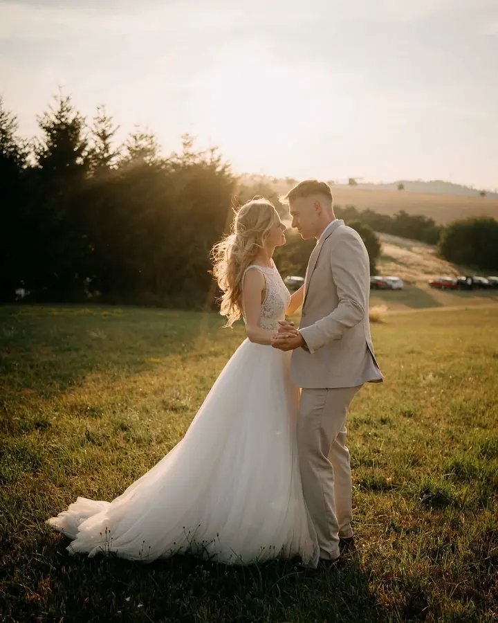
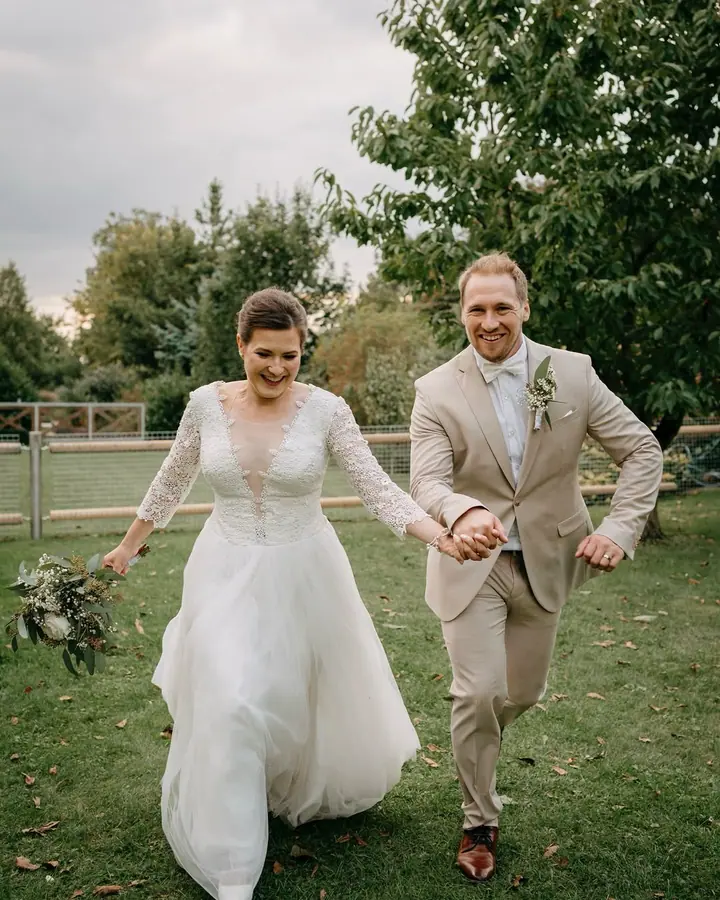
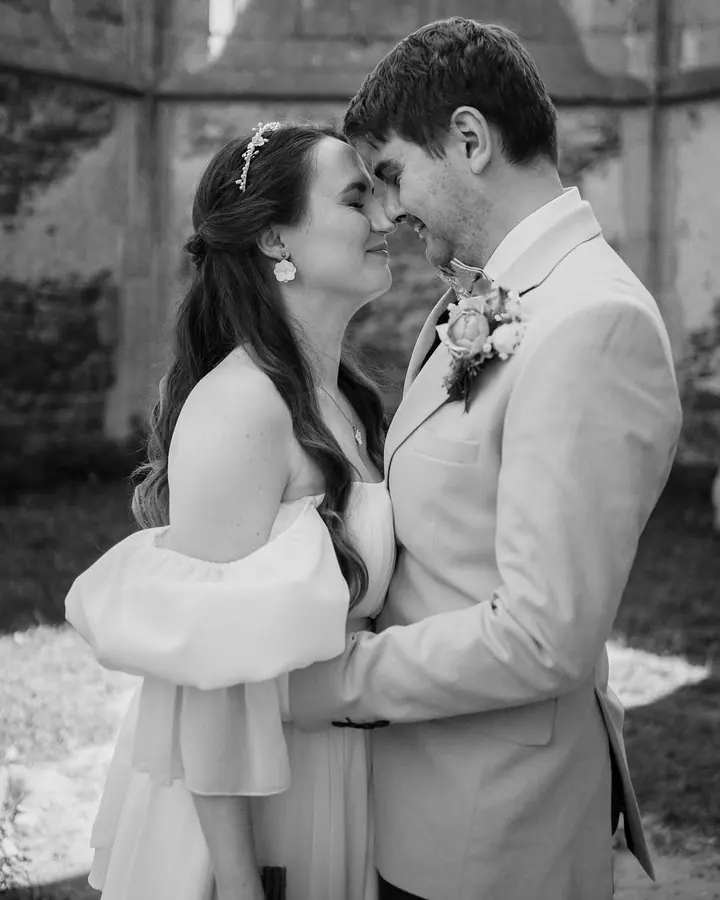

jedna
Svatební focení
Fotím svatby od příprav přes obřad až po oslavu s přáteli. Hlídám detaily a momenty, ve kterých je cítit atmosféra celého dne. Ceník svateb vám pošlu na vyžádání.

Svatební a rodinná fotografka · Praha, Třebíč, celá ČR

Jmenuji se Eliška Špačková a fotím svatby, páry a rodiny v Praze, v Třebíči a po domluvě kdekoli v Česku. Mám ráda detaily a jedinečné momenty, které vykreslují atmosféru okamžiku.
Více o mně
Co fotím
jedna
Fotím svatby od příprav přes obřad až po oslavu s přáteli. Hlídám detaily a momenty, ve kterých je cítit atmosféra celého dne. Ceník svateb vám pošlu na vyžádání.
dvě
Procházka ve dvou, kde nemusíte nic předvádět. Fotky, ke kterým se budete rádi vracet.
tři
Rodinky venku a v pohodě, s dětmi, prarodiči i se smíchem. Chci, aby pro vás focení bylo zážitek, ne povinnost.
Portréty pro vás samotné, přirozeně a bez strojenosti. Místo i styl spolu vybereme předem.
Focení by mělo být zážitkem.
Za objektivem
Je mi 25 let a fotím svatby, rodinky, páry i portréty. Nejvíc mě baví chvíle, které se nedají naaranžovat: smích u přípitku, pohled mezi novomanželi nebo ruka, která na chvíli stiskne tu druhou.
Ve fotografii se ráda vzdělávám. Mám za sebou roční akademii multimédií na VŠE v Praze a několik kurzů. Sleduji nové trendy a do každého focení přidávám kus sebe.
Podle mě by focení mělo být zážitek. Má vytvořit jedinečné vzpomínky, a až se jednou na fotky podíváte, měli byste se přenést zpátky v čase.
Eliška
Pošlete mi zprávu přes formulář nebo na e-mail. Napište, o jaké focení máte zájem, kdy a kde.
Probereme vaše představy, místo i harmonogram. U svateb vám pošlu ceník na vyžádání.
Fotím v klidu a přirozeně, abyste si den užili a nemuseli myslet na foťák.
Vyberu a upravím ty nejlepší snímky a pošlu vám je v online galerii.
Portfolio
Otázky
Nejčastěji v Praze a v Třebíči. Po domluvě ráda přijedu kamkoli po České republice.
Svatební ceník posílám na vyžádání. Stačí mi napsat a domluvíme se podle toho, co od focení čekáte.
Vůbec ne. Focení má být zážitek, takže vás nebudu nutit do strojených póz. Nejvíc mě baví přirozené momenty.
Ano, rodinky fotím moc ráda. Přizpůsobím se tempu dětí a focení naplánujeme tak, aby bylo v pohodě pro všechny.
Napište pár vět o tom, co si představujete. spackovafoto@gmail.com